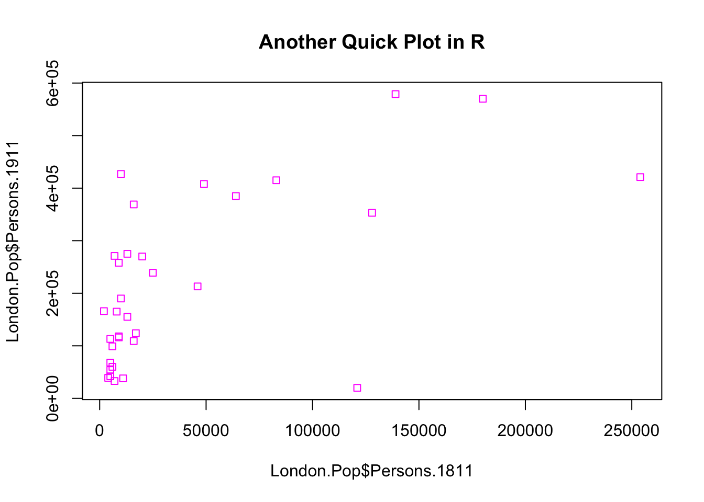
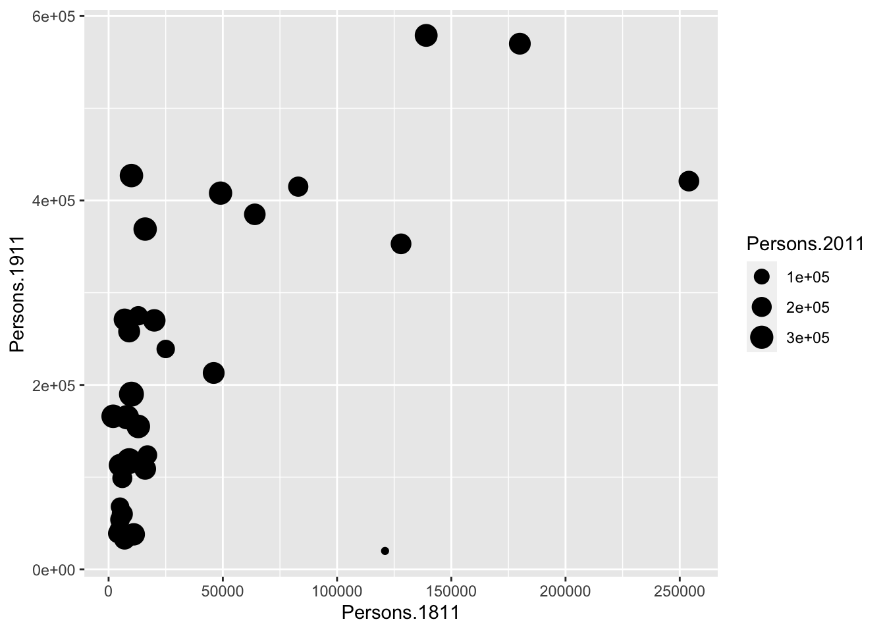
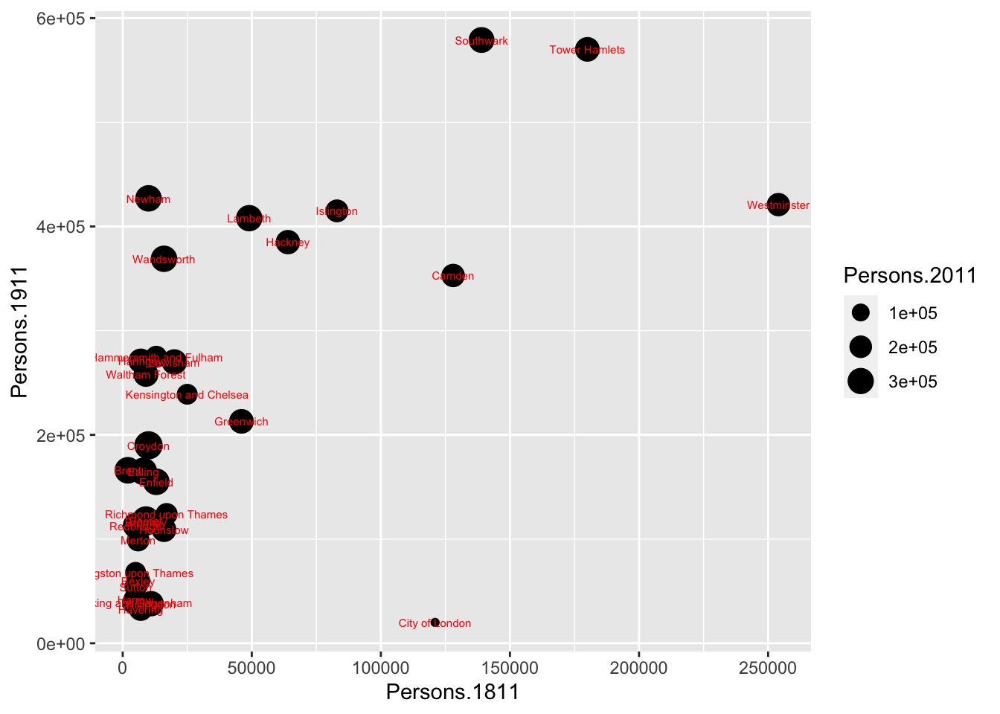

2 Examining data I
2.1 Introduction
Welcome to your second week of Introduction to Quantitative Research Methods. This week we will focus on examining data using descriptive statistics and measures of dispersion. We will also talk about data visualisation.
This week is structured by 3 short videos, practical material that you need to work through in preparation for Thursday’s seminar, and a seminar task that you need to do in prepratation for Thursday’s seminar.
Let’s get to it.
Video: Introduction W02
[Lecture slides] [Watch on MS stream]2.1.1 Reading list
Core reading
- Lane et al., 2003, Chapter 2: Graphing Distributions. In: Lane et al., 2003, Introduction to Statistics. Houston, Texas: Rice University. [Link]
Supplementary reading
- Diez et al., 2019, Chapter 2: Summarizing data. In: Diez et al., 2019, OpenIntro Statistics. Fourth Edition. Boston, Massachusetts: OpenIntro. [Link]
2.1.2 Q&A session
This week there will be NO live Q&A session.
2.2 Examining data
Any research project involving quantitative data should start with an exploration / examination of the available datasets. This applies both to data that you have collected yourself or data that you have acquired in a different way, e.g. through downloading official UK Census and labour market statistics. The set of techniques that is used to examine your data is called descriptive statistcs. Descriptive statistics are used to describe the basic features of your dataset and provide simple summaries about your data. Together with simple visual analysis, they form the basis of virtually every quantitative data analysis
Video: Descriptive statistics
[Lecture slides] [Watch on MS stream]For this tutorial we will continue to use the London.Pop object that we created during last week’s tutorial. You may still have it loaded into your R workspace. To check if you do you can use the ls() command. Type this into the command line and see if London.Pop is printed. If not you can simply reload it:
# set the working directory path to the folder you wish to use
# you may need to create the folder first if it doesn't exist
setwd('~/POLS0008')
# note the single / (\\ will also work)If you struggle with setting up your working directory, have a look at how we did this last week!
# load csv file from working directory
London.Pop <- read.csv('census-historic-population-borough.csv')Use the head(), or View() command to remind yourself of the structure of the London population data frame. You should see 25 columns of data.
2.2.1 Plotting data in R
Tools to create high quality plots have become one of R’s greatest assets. This is a relatively recent development since the software has traditionally been focused on the statistics rather than visualisation. The standard installation of R has base graphic functionality built in to produce very simple plots. For example we can plot the relationship between the London population in 1811 and 1911.
# make a quick plot of two variables of the London population data set
plot(London.Pop$Persons.1811,London.Pop$Persons.1911)
Questions
- What happens if you change the order of the variables you put in the
plot()function? Why? - Instead of using the
$to select the columns of our dataset, how else can we get the same results?
The result of calling the plot() function, is a very simple scatter graph. The plot() function offers a huge number of options for customisation. You can see them using the ?plot help pages and also the ?par help pages (par in this case is short for parameters). There are some examples below (note how the parameters come after specifying the x and y columns).
# add a title, change point colour, change point size
plot(London.Pop$Persons.1811, London.Pop$Persons.1911, main='Quick Plot in R', col='blue', cex=2)
# add a title, change point colour, change point symbol
plot(London.Pop$Persons.1811, London.Pop$Persons.1911, main="Another Quick Plot in R", col='magenta', pch=22)
For more information on the plot parameters (some have obscure names) have a look here: http://www.statmethods.net/advgraphs/parameters.html
2.2.2 ggplot2
A slightly different method of creating plots in R requires the ggplot2 package. There are many hundreds of packages in R each designed for a specific purpose. These are not installed automatically, so each one has to be downloaded and then we need to tell R to use it. To download and install the ggplot2 package type the following:
If you are running RStudio on your own computer: when you hit enter R could ask you to select a mirror to download the package contents from. It does not really matter which one you choose, but we would suggest you pick the mirror that is geographically closest to you.
# install package
install.packages('ggplot2')The install.packages() step only needs to be performed once. You do not need to install a the package every time you want to use it. However, each time you open R and wish to use a package you need to use the library() command to tell R that it will be required.

Figure 2.1: Installing the ggplot2 package.
# load ggplot2 package
library(ggplot2)The ggplot2 package is an implementation of the Grammar of Graphics (Wilkinson 2005) - a general scheme for data visualisation that breaks up graphs into semantic components such as scales and layers. ggplot2 can serve as a replacement for the base graphics in R and contains a number of default options that match good visualisation practice. You provide the data, tell ggplot2 how to map variables to aesthetics, what graphical primitives to use, and it takes care of the details.
Whilst the instructions are step by step. you are encouraged to deviate from them (trying different colours for example) to get a better understanding of what we are doing. For further help, ggplot2 is one of the best documented packages in R and large volumes of documentation are available. Good examples of how to learn how to make great graphs and visualisations can also be found on the website https://cedricscherer.netlify.app/2019/08/05/a-ggplot2-tutorial-for-beautiful-plotting-in-r/. Let’s try to make a basic plot using ggplot2 ourselves.
# create a ggplot2 object names 'p'
p <- ggplot(London.Pop, aes(Persons.1811, Persons.1911))What you have just done is set up a ggplot object where you say where you want the input data to come from – in this case it is the London.Pop object. The column headings within the aes() brackets refer to the parts of that data frame you wish to use (the variables Persons.1811 and Persons.1911). aes is short for aesthetics that vary – this is a complicated way of saying the data variables used in the plot. If you just type p and hit enter you will get an empty canvas. This is because you have not told ggplot what you want to do with the data. We do this by adding so-called geoms, in this case geom_point(), to create a scatter plot. Let’s try this.
# plot
p
# add our geom to our 'p' object
p <- p + geom_point()
# plot
p
You can already see that this plot is looking a bit nicer than the one we created with the base plot() function used above. Within the geom_point() brackets you can alter the appearance of the points in the plot. Try something like p + geom_point(colour='red', size=2) and also experiment with your own colours/ sizes.
If you want to colour the points according to another variable it is possible to do this by adding the desired variable into the aes() section after geom_point(). Here we will do this to indicate the size of the population in 2011 as well as the relationship between the size of the population in 19811 and 1911.
# add some more aesthetics that vary
p + geom_point(aes(colour = Persons.2011), size = 2)
You will notice that ggplot has also created a key that shows the values associated with each colour. In this slightly contrived example it is also possible to resize each of the points according to the Persons.2011 variable.
# add some more aesthetics that vary
p + geom_point(aes(size = Persons.2011))
The real power of ggplot2 lies in its ability build a plot up as a series of layers. This is done by stringing plot functions (geoms) together with the + sign. In this case we can add a text layer to the plot using geom_text().
# add some more aesthetics that vary
p + geom_point(aes(size = Persons.2011)) +
geom_text(size = 2, colour='red', aes(label = Area.Name))
This idea of layers (or geoms) is quite different from the standard plot functions in R, but you will find that each of the functions does a lot of clever stuff to make plotting much easier (see the ggplot2 documentation for a full list). The above code adds London Borough labels to the plot over the points they correspond to. This isn’t perfect since many of the labels overlap but they serve as a useful illustration of the layers. To make things a little easier the plot can be saved as a PDF using the ggsave command. When saving the plot can be enlarged to help make the labels more legible.
# save the plot
ggsave('first_ggplot.pdf', scale=2)Questions
- Where does your plot get saved? Why?
ggsave only works with plots that were created with ggplot. Within the brackets you should create a file name for the plot - this needs to include the file format: in this case .pdf, but you could also save the plot as a .jpg file. The file will be saved to your working directory. The scale controls how many times bigger you want the exported plot to be than it currently is in the plot window. Once executed you should be able to see a PDF file in your working directory.
Recap
In this section you have:
- Created a scatter plot using the base plot fucntionality in R.
- Installed and loaded additional packages in R.
- Learned the basics of the
ggplot2package for creating plots. - Learned what
geomsare in the context ofggplot2. - Learned how to specify data variables with the
aes()parameter. - Saved your plot.
2.3 Visualising data
Video: Visualising data
[Lecture slides] [Watch on MS stream]In addition to plotting, descriptive statistics offer a further tool for getting to know your data. They provide useful summaries of a dataset and along with intelligent plotting can also provide a good sanity check to ensure the data conform to expectations.
For the rest of this tutorial we will change our dataset to one containing the number of assault incidents that ambulances have been called to in London between 2009 and 2011. You will need to download a revised version of this file called: ambulance_assault.csv and upload it to your working directory. It is in the same data format (csv) as our London population file so we use the read.csv() command again.
File download
| File | Type | Link |
|---|---|---|
| Assault Incidents London | csv |
Download |
# load csv file from working directory
input <- read.csv('ambulance_assault.csv')# inspect the results
head(input)## Bor_Code WardName WardCode WardType assault_09_11
## 1 00AA Aldersgate 00AAFA Prospering Metropolitan 10
## 2 00AA Aldgate 00AAFB Prospering Metropolitan 0
## 3 00AA Bassishaw 00AAFC Prospering Metropolitan 0
## 4 00AA Billingsgate 00AAFD Prospering Metropolitan 0
## 5 00AA Bishopsgate 00AAFE Prospering Metropolitan 188
## 6 00AA Bread Street 00AAFF Prospering Metropolitan 0# inspect the size of the dataset
nrow(input)## [1] 649You will notice that the data table has 4 columns and 649 rows. The column headings are abbreviations of the following:
- Bor_Code: Borough Code. London has 32 Boroughs (such as Camden, Islington, Westminster, etc.) plus the City of London at the centre. These codes are used as a quick way of referring to them from official data sources.
- WardName: Boroughs can be broken into much smaller areas known as Wards. These are electoral districts and have existed in London for centuries.
- WardCode: A statistical code for the Wards above.
- WardType: a classification that groups wards based on similar characteristics.
- assault_09_11: The number of assault incidents requiring an ambulance between 2009 and 2011 for each Ward.
The mean(), median(), and range() were some of the first R functions we used at the last week to describe our Friends dataset. We will use these to describe our assault incident data as well as other descriptive statistics, including standard deviation.
# calculate the mean of the assault incident variable
mean(input$assault_09_11)## [1] 173.4669# calculate the standard deviation of the assault incident variable
sd(input$assault_09_11)## [1] 130.3482# calculate the minimum value of the assault incident variable
min(input$assault_09_11)## [1] 0# calculate the maximum value of the assault incident variable
max(input$assault_09_11)## [1] 1582# calculate the range of the assault incident variable
range(input$assault_09_11)## [1] 0 1582These are commonly used descriptive statistics. To make things even easier, R has a summary() function that calculates a number of these routine statistics simultaneously.
# calculate the most common descriptive statistics for the assault incident variable
summary(input$assault_09_11)## Min. 1st Qu. Median Mean 3rd Qu. Max.
## 0.0 86.0 146.0 173.5 233.0 1582.0You should see you get the minimum (Min.) and maximum (Max.) values of the assault_09_11 column; its first (1st Qu.) and third (3rd Qu.) quartiles that comprise the interquartile range; its the mean and the median. The built-in R summary() function does not calculate the standard deviation. There are functions in other libraries that calculate more detailed descriptive statistics, including describe() in the psych package, which we will use in the later tutorials. We can also use the summary() function to describe a categorical variable and it will list its levels:
# summarise a categorical variable
summary(input$WardType)## Accessible Countryside Industrial Hinterlands
## 1 8
## Multicultural Metropolitan Prospering Metropolitan
## 240 169
## Student Communities Suburbs and Small Towns
## 9 210
## Traditional Manufacturing
## 12As you may notice, the summary of a categorical variable is in very fact the same as frequency table:
# create a frequency table of a categorical variable
freqtable <- table(input$WardType)
# inspect
freqtable##
## Accessible Countryside Industrial Hinterlands
## 1 8
## Multicultural Metropolitan Prospering Metropolitan
## 240 169
## Student Communities Suburbs and Small Towns
## 9 210
## Traditional Manufacturing
## 12We can also get the proportion of each group using the frequency table as input:
# create a frequency table of a categorical variable
proptable <- prop.table(freqtable)
# inspect
proptable##
## Accessible Countryside Industrial Hinterlands
## 0.001540832 0.012326656
## Multicultural Metropolitan Prospering Metropolitan
## 0.369799692 0.260400616
## Student Communities Suburbs and Small Towns
## 0.013867488 0.323574730
## Traditional Manufacturing
## 0.0184899852.4 Seminar
Seminar task
Create a histogram plot of the ambulance assaults dataset:
- Use the
ggplot2package. - Instead of the
geom_point()geom, use thegeom_histogram()geom. - Figure out how to change the labels of the x-axis and the y-axis.
- Save the plot as a
pdf.
Seminar questions
- Explain why each of these statistics are useful and what type of data are required to calculate them:
- Mean
- Median
- Mode
- Interquartile Range
- Range
- Standard Deviation
Seminar link
Seminars for all groups take place on Thursday morning. You can find the Zoom link to your seminar group on Moodle.
2.5 Before you leave
Save your R script by pressing the Save button in the script window. That is it for this week!